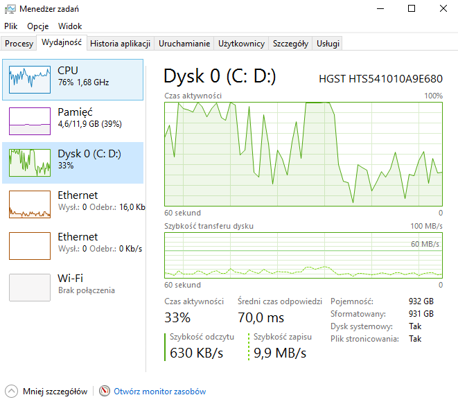

Zadanie GEO
Informacje o danych
Dane zawierają najnowsze (luty 2017 r.) dane z katalogu pocztowego służb zdrowia w Wielkiej Brytanii. Źródło. Rozmiar: 2 GB Ilość: 2593752
Instalacja i konfiguracja oprogramowania
postgreSQL
Do rozwiązania zadania użyto bazy postgreSQL. Należy ją pobrać, zainstalować. Podczas instalacji możliwe, że będziemy musieli podać hasło do domyślnego użytkownika postgres.
Import danych
Ze strony pobieramy plik z rozszeżeniem csv.
Import danych do postreSQL
Pobieramy ze strony pgfutter, oraz zmieniamy nazwę pobranego pliku na pgfutter.exe. Następnie importujemy dane do postreSQL'a (plik z danymi oraz pgfutter muszą znajdować się w tym samym katalogu), polecenie:
pgfutter --pass "[moje hasło]" --table "test" csv NHS_Postcode_Directory_Latest_Centroids.csv

Procesor podczas importu danych do postreSQL

Pamięć podczas importu danych do postreSQL

Dysk podczas importu danych do postreSQL
Wykonanie trwało ok. 2 minut, 35 sekund.
Ostatecznie pojawił się komunikat: "2593752 rows imported into import.test"